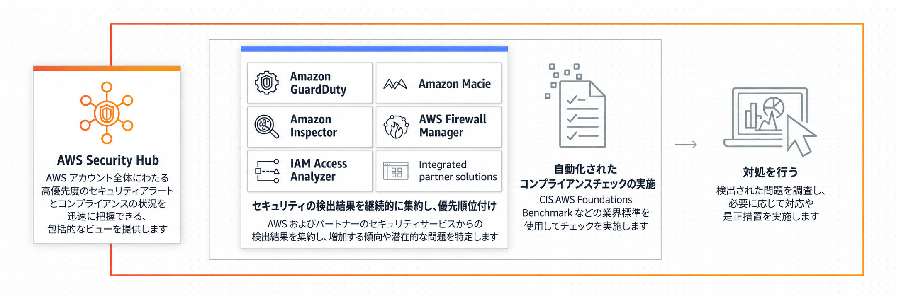

SecurityHub¶
概要¶
AWSの対象サービスのアラートを一元管理する仕組みを持つサービス
分析結果をもとに一般的なコンプライアンスに基づいたAWS環境になっているかどうかのチェックをしてくれる
ただし、AWS Security Hubで統合されたアラートによる自動修復の機能はない
AWS Security Hubの一元管理の対象にできるAWSのサービスは以下のとおり
Amazon GuardDuty
Amazon Inspector
IAM Access Analyzer
Amazon Macie
AWS Firewall Manager
一番のメリットは、複数にわたるサービスで発生したアラートを1つの画面でまとめて見れること。
構成¶
